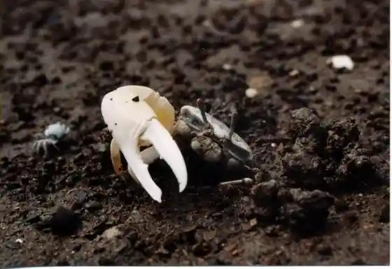
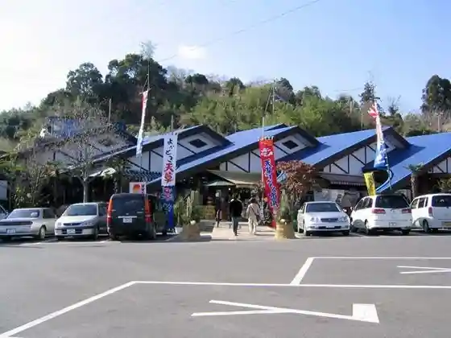
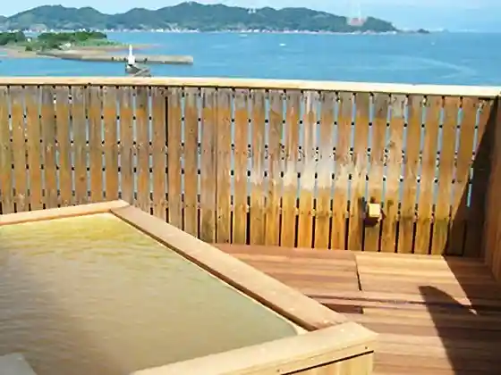
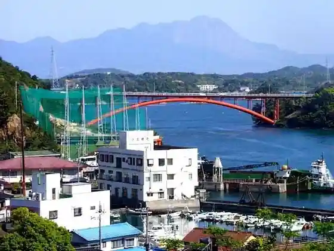

Amakusa Bijita Center
Kamiamakusa, Kumamoto · 0969-56-3665 · Official / source link

Ai no Amakusa Village
Kamiamakusa, Kumamoto · 0964-56-5151 · Official / source link

Komatsu Ya Nagisa Kan
Kamiamakusa, Kumamoto · 0964-59-0111 · Official / source link

Itsutsubashi En
Kamiamakusa, Kumamoto · 0967-56-1417 · Official / source link

Amakusa Nagisa Tei
Kamiamakusa, Kumamoto · 0969-56-3232 · Official / source link
Tabi Tei Ai no Misaki
Kamiamakusa, Kumamoto · 0964-59-0010 · Official / source link
Dai Cave no Yado Yu Raku Tei
Kamiamakusa, Kumamoto · 0964-56-0536 · Official / source link
Kamiamakusa Onsen Sato
Kamiamakusa, Kumamoto · 0964-56-5602 · Official / source link
Ka Ho Ki Village (Roadside Station Kamiamakusa Sanparu Nai)
Kamiamakusa, Kumamoto · 0964-58-5600 · Official / source link
Keki Workshop Panpukin
Kamiamakusa, Kumamoto · 0969-56-2505 · Official / source link
Nishime Beach (Kamu Beach)
Kamiamakusa, Kumamoto · 0964-56-5602 · Official / source link
Hi Go Beach (Parusan Beach)
Kamiamakusa, Kumamoto · 0964-56-5602 · Official / source link
Amakusa Takara Shima Line
Kamiamakusa, Kumamoto · 0969-56-2458 · Official / source link
Himedo Park
Kamiamakusa, Kumamoto · 0964-26-5512 · Official / source link
Suwa Beach
Kamiamakusa, Kumamoto · 0964-56-5602 · Official / source link
Kojima Beach
Kamiamakusa, Kumamoto · 0964-56-5602 · Official / source link
Amakusashiro Park
Kamiamakusa, Kumamoto · 0964-26-5512 · Official / source link
Amakusashiro Museum
Kamiamakusa, Kumamoto · 0964-56-5311 · Official / source link
no Kama Shima Hachi Fuku Campground
Kamiamakusa, Kumamoto · 0964-56-3883 · Official / source link
Amakusa Tsuribori Reja Land
Kamiamakusa, Kumamoto · 0964-59-0188 · Official / source link
Yu Shima (Dango Shima)
Kamiamakusa, Kumamoto · 0964-26-5512 · Official / source link
Taisaku Yama no Senmaida
Kamiamakusa, Kumamoto · 0964-26-5512 · Official / source link
Sengan Yama
Kamiamakusa, Kumamoto · 0964-26-5512 · Official / source link
Taka Mai Tozan (Takabutoyama)
Kamiamakusa, Kumamoto · 0964-56-5602 · Official / source link
Shiratake Forest Park
Kamiamakusa, Kumamoto · 0964-26-5512 · Official / source link
Amakusa Itsutsubashi
Kamiamakusa, Kumamoto · 0964-56-5602 · Official / source link
Fisshariina Amakusa
Kamiamakusa, Kumamoto · 0969-56-3043 · Official / source link
Shiikuruzu
Kamiamakusa, Kumamoto · 0969-56-2458 · Official / source link
Supa Taraso Amakusa
Kamiamakusa, Kumamoto · 0964-56-1126 · Official / source link
Kaijo Tsuribori Tsuri Ichi
Kamiamakusa, Kumamoto · 0964-57-0734 · Official / source link
Roadside Station Kamiamakusa Sanparu
Kamiamakusa, Kumamoto · 0964-58-5600 · Official / source link
mio camino AMAKUSA (Miokamii no Amakusa)
Kamiamakusa, Kumamoto · 0969-33-9500 · Official / source link
Ryugadakeyama Itadaki Nature Park Viewpoint Tokoro
Kamiamakusa, Kumamoto · 0969-63-0466 · Official / source link
Amakusa Paru Garden & Kaichu Aquarium Shiidonatsu
Kamiamakusa, Kumamoto · 0969-56-1155 · Official / source link
L'isola THE BIRD (Rizorazabado)
Kamiamakusa, Kumamoto · 0964-27-5757 · Official / source link
TAYUTA (Tayuta)
Kamiamakusa, Kumamoto · 050-1706-5284 · Official / source link